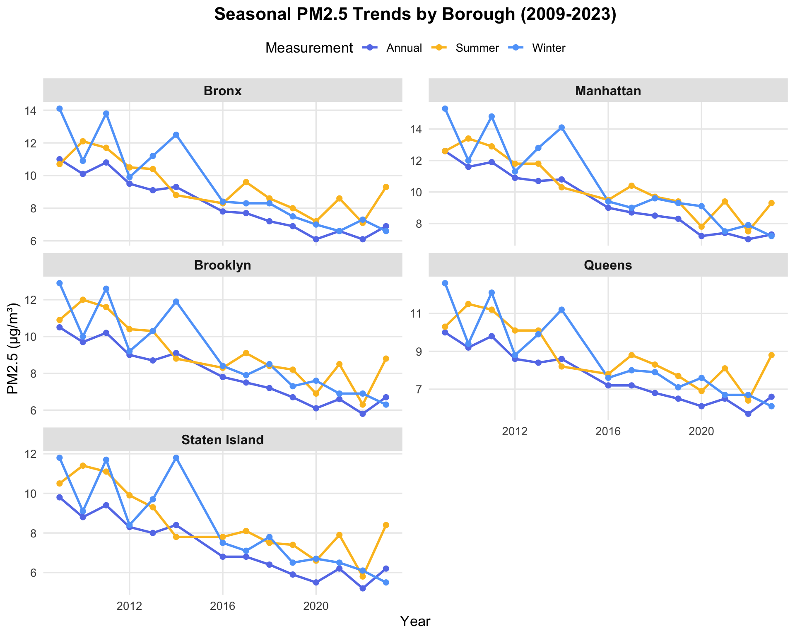
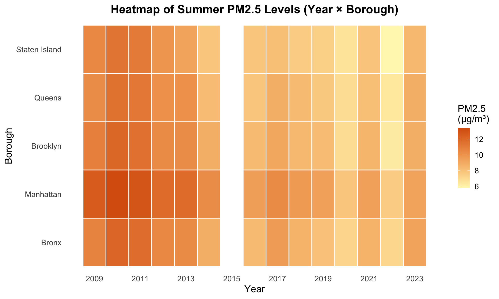
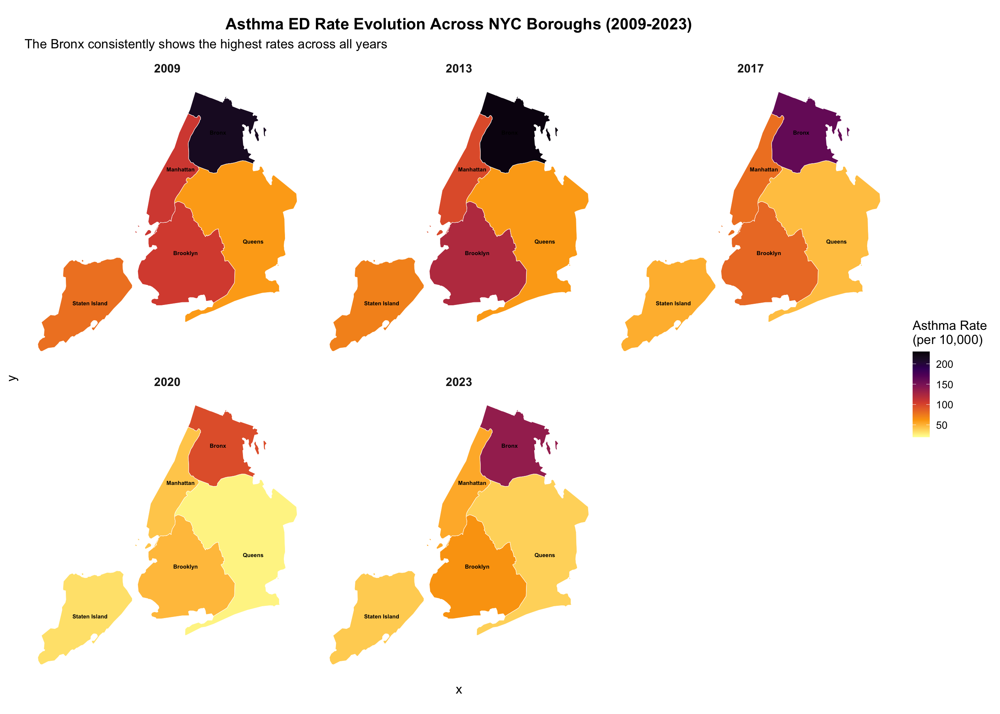

Air Pollution and Asthma Emergency Department Visits in New York City
A Time-Series and Neighborhood-Level Analysis
Minseo Kim, Jiaqi Zhu, Wenyu Lu
2025-12-06
library(tidyverse)
library(plotly)
library(viridis)
library(knitr)
library(sf)
library(tigris)
library(spdep)
library(MASS)
library(patchwork)# Load the merged dataset
pm25_asthma <- read_csv("data/merged_pm25_asthma.csv") %>%
mutate(
borough = factor(borough,
levels = c("Bronx", "Manhattan", "Brooklyn",
"Queens", "Staten Island"))
) %>%
arrange(year, borough)
# Note: Bronx is set as the reference level for regression models
# because it is the focus of our environmental justice analysis1. Motivation
Air pollution is a major public health concern in urban environments, and New York City (NYC) consistently reports high rates of respiratory illnesses, particularly asthma. Fine particulate matter (PM2.5)—particles with a diameter of 2.5 micrometers or less—can penetrate deep into the lungs and is known to trigger asthma symptoms and increase emergency department (ED) visits.
We chose this topic for several reasons:
Public Health Relevance: Asthma affects millions of Americans, and NYC has some of the highest asthma rates in the nation, particularly in certain neighborhoods.
Data Availability: Both air quality and health outcome data are publicly available from NYC government sources, making this a feasible project with reliable data.
Environmental Justice: We were interested in exploring whether air pollution affects all communities equally, or whether some neighborhoods bear a disproportionate health burden.
Policy Implications: Understanding the PM2.5–asthma relationship can inform city-level environmental policies and targeted public health interventions.
Our central goal was to explore how PM2.5 levels vary across time and NYC boroughs, and whether increases in pollution are associated with higher asthma ED visit rates.
3. Research Questions
Our project addressed the following questions:
- How have PM2.5 levels and asthma ED visit rates changed over time in NYC (2009–2023)?
- Do boroughs differ in both PM2.5 concentration and asthma ED visit rates?
- Is higher PM2.5 associated with higher asthma ED visit rates after adjusting for borough and year?
- Does the association between PM2.5 and asthma ED visits differ across boroughs (effect modification)?
4. Data
4.1 Data Sources
We used two publicly available datasets from NYC government sources:
Air Quality (PM2.5) – NYC Open Data
- Contains annual PM2.5 concentrations by borough
- Includes annual average, summer average, and winter average
- URL: NYC Open Data Portal
Asthma Emergency Department Visits – NYC DOHMH
- Contains borough-level annual asthma ED visit rates
- Age-standardized rates per 10,000 population
- URL: NYC Environment & Health Data Portal
4.2 Data Collection and Cleaning
Our data cleaning process involved several steps:
- Downloaded raw data from both sources as CSV files
- Standardized borough names (e.g., ensuring “Staten Island” was consistent across datasets)
- Converted year to numeric format
- Merged datasets by year and borough
- Checked for missing values — we found complete data for all borough-year combinations
The final merged dataset contains 70 observations (5 boroughs × 14 years) with the following variables:
## Rows: 70
## Columns: 6
## $ year <dbl> 2009, 2009, 2009, 2009, 2009, 2010, 2010, 2010, 2010, 2010, 2011, 2011, 2011, 2011, 2011, 2012, 20…
## $ borough <fct> Bronx, Manhattan, Brooklyn, Queens, Staten Island, Bronx, Manhattan, Brooklyn, Queens, Staten Isla…
## $ pm25_annual <dbl> 11.0, 12.6, 10.5, 10.0, 9.8, 10.1, 11.6, 9.7, 9.2, 8.8, 10.8, 11.9, 10.2, 9.8, 9.4, 9.5, 10.9, 9.0…
## $ pm25_summer <dbl> 10.7, 12.6, 10.9, 10.3, 10.5, 12.1, 13.4, 12.0, 11.5, 11.4, 11.7, 12.9, 11.6, 11.2, 11.1, 10.5, 11…
## $ pm25_winter <dbl> 14.1, 15.3, 12.9, 12.6, 11.8, 10.9, 12.0, 10.0, 9.4, 9.1, 13.8, 14.8, 12.6, 12.1, 11.7, 9.9, 11.3,…
## $ asthma_rate <dbl> 214.2, 107.6, 106.1, 59.9, 79.5, 200.7, 97.0, 115.7, 59.4, 76.5, 193.2, 101.7, 121.0, 62.0, 77.1, …# Summary statistics
summary_stats <- pm25_asthma %>%
summarise(
`Time Period` = paste(min(year), "-", max(year)),
`Number of Boroughs` = n_distinct(borough),
`Total Observations` = n(),
`PM2.5 Mean` = round(mean(pm25_annual), 2),
`PM2.5 Range` = paste(round(min(pm25_annual), 1), "-", round(max(pm25_annual), 1)),
`Asthma Rate Mean` = round(mean(asthma_rate), 1),
`Asthma Rate Range` = paste(round(min(asthma_rate), 1), "-", round(max(asthma_rate), 1))
)
kable(t(summary_stats), col.names = "Value", caption = "Dataset Summary Statistics")| Value | |
|---|---|
| Time Period | 2009 - 2023 |
| Number of Boroughs | 5 |
| Total Observations | 70 |
| PM2.5 Mean | 8.11 |
| PM2.5 Range | 5.2 - 12.6 |
| Asthma Rate Mean | 90.3 |
| Asthma Rate Range | 25.4 - 226.8 |
4.3 Data Limitations
We encountered several limitations:
Temporal Resolution: We initially hoped for monthly data to examine seasonal patterns more precisely, but only annual data was consistently available for both PM2.5 and asthma outcomes. This limited our ability to examine short-term exposure effects.
Geographic Resolution: Borough-level data masks within-borough variation. For example, the South Bronx may have very different patterns than the North Bronx.
Ecological Design: Because our data is aggregated at the borough level, we cannot make individual-level causal inferences.
5. Exploratory Data Analysis
5.1 Temporal Trends in PM2.5
We first examined how PM2.5 concentrations have changed over time across NYC boroughs.
p1 <- pm25_asthma %>%
plot_ly(x = ~year, y = ~pm25_annual, color = ~borough,
type = 'scatter', mode = 'lines+markers',
colors = viridis(5),
hovertemplate = paste(
'<b>%{fullData.name}</b><br>',
'Year: %{x}<br>',
'PM2.5: %{y:.2f} μg/m³<br>',
'<extra></extra>'
)) %>%
layout(
title = list(text = "<b>Annual PM2.5 Concentrations by Borough (2009-2023)</b>"),
xaxis = list(title = "Year"),
yaxis = list(title = "PM2.5 (μg/m³)"),
hovermode = 'closest',
legend = list(title = list(text = '<b>Borough</b>'))
)
p1Analysis of PM2.5 Trends:
This visualization reveals several important patterns:
Substantial Decline: All five boroughs show a clear downward trend in PM2.5 concentrations over the 14-year study period. Average PM2.5 dropped from approximately 10-12 μg/m³ in 2009 to 6-7 μg/m³ by 2023—a reduction of roughly 40%.
Manhattan Consistently Highest: Manhattan maintained the highest PM2.5 levels throughout the study period, likely due to higher traffic density and commercial activity. However, Manhattan also showed the largest absolute decrease (from ~12 to ~7.3 μg/m³).
Staten Island Consistently Lowest: As the least densely populated borough with more green space, Staten Island had the lowest PM2.5 levels throughout.
Convergence Over Time: The gap between the highest and lowest boroughs has narrowed over time, suggesting that air quality improvements have been relatively uniform across NYC.
Policy Success: These improvements likely reflect the success of NYC’s Clean Heat program (which phased out heavy heating oils) and stricter vehicle emission standards.
5.2 Temporal Trends in Asthma ED Visits
Next, we examined asthma ED visit rates over the same period.
p2 <- pm25_asthma %>%
plot_ly(x = ~year, y = ~asthma_rate, color = ~borough,
type = 'scatter', mode = 'lines+markers',
colors = viridis(5, option = "plasma"),
hovertemplate = paste(
'<b>%{fullData.name}</b><br>',
'Year: %{x}<br>',
'ED Visit Rate: %{y:.1f} per 10,000<br>',
'<extra></extra>'
)) %>%
layout(
title = list(text = "<b>Asthma ED Visit Rates by Borough (2009-2023)</b>"),
xaxis = list(title = "Year"),
yaxis = list(title = "ED Visit Rate (per 10,000 population)"),
hovermode = 'closest',
legend = list(title = list(text = '<b>Borough</b>'))
)
p2Analysis of Asthma Trends:
This plot revealed several important patterns:
Bronx Health Disparity: The Bronx consistently shows the highest asthma ED rates across all years, roughly 2-4 times higher than other boroughs. In 2009, the Bronx rate was approximately 215 per 10,000, compared to only 60 per 10,000 in Queens.
Overall Decline: All boroughs show declining asthma ED rates over time, which is encouraging from a public health perspective.
COVID-19 Impact: There is a notable dip in 2020 across all boroughs, likely reflecting reduced healthcare-seeking behavior during the pandemic and possibly improved air quality during lockdowns.
Post-COVID Rebound: Rates increased again in 2021-2023, though they remained below pre-pandemic levels.
Persistent Inequality: Despite improvements, the relative disparity between the Bronx and other boroughs has remained largely unchanged over 14 years. This suggests that factors beyond air quality—such as poverty, housing quality, healthcare access, and baseline population health—contribute to the Bronx’s elevated asthma burden.
5.3 Faceted Time Series
To better compare patterns across boroughs, we created faceted plots:
p_pm25 <- ggplot(pm25_asthma, aes(x = year, y = pm25_annual, color = borough)) +
geom_line(linewidth = 1) +
geom_point(size = 2) +
facet_wrap(~ borough, ncol = 3) +
scale_color_viridis_d() +
labs(
title = "Annual PM2.5 Levels by Borough",
x = "Year",
y = "PM2.5 (μg/m³)"
) +
theme_minimal(base_size = 12) +
theme(legend.position = "none",
strip.text = element_text(face = "bold"))
p_asthma <- ggplot(pm25_asthma, aes(x = year, y = asthma_rate, color = borough)) +
geom_line(linewidth = 1) +
geom_point(size = 2) +
facet_wrap(~ borough, ncol = 3, scales = "free_y") +
scale_color_viridis_d(option = "plasma") +
labs(
title = "Asthma ED Visit Rates by Borough",
x = "Year",
y = "Rate (per 10,000)"
) +
theme_minimal(base_size = 12) +
theme(legend.position = "none",
strip.text = element_text(face = "bold"))
p_pm25 / p_asthma
Analysis of Faceted Plots:
The faceted view allows us to examine each borough’s trajectory individually:
Note on Y-axis: We used
scales = "free_y"for the asthma plot because the Bronx values would otherwise compress the other boroughs’ trends. This is a visualization choice we made after initially plotting with a common scale and finding it hard to see patterns in the lower-rate boroughs.Within-Borough Patterns: Each borough shows a generally consistent downward trend in both PM2.5 and asthma rates, though the slopes vary.
Year-to-Year Variation: Some boroughs show more year-to-year variability than others. For example, Staten Island’s PM2.5 shows more fluctuation, possibly due to its smaller area and fewer monitoring stations.
5.4 Association Between PM2.5 and Asthma
A key question is whether PM2.5 and asthma ED rates are correlated. We created a scatterplot to visualize this relationship:
ggplot(pm25_asthma, aes(x = pm25_annual, y = asthma_rate, color = borough)) +
geom_point(size = 3, alpha = 0.8) +
geom_smooth(method = "lm", se = FALSE, linewidth = 1) +
scale_color_viridis_d() +
labs(
title = "Relationship Between PM2.5 and Asthma ED Visit Rates",
subtitle = "Each point represents one borough-year; lines show borough-specific linear trends",
x = "Annual PM2.5 (μg/m³)",
y = "Asthma ED Visit Rate (per 10,000)",
color = "Borough"
) +
theme_minimal(base_size = 14) +
theme(
plot.title = element_text(face = "bold"),
legend.position = "right"
)
Analysis of PM2.5–Asthma Association:
This scatterplot is central to our analysis and reveals several important insights:
Positive Associations Within Boroughs: All five regression lines have positive slopes, indicating that within each borough, years with higher PM2.5 tend to have higher asthma ED rates.
The Bronx Shows Highest Rates: The Bronx forms a distinct cluster in the upper portion of the plot, with asthma rates roughly 2-3 times higher than other boroughs at similar PM2.5 levels.
Different Slopes: The slopes of the regression lines differ across boroughs. The Bronx shows the steepest slope, suggesting that PM2.5 increases may have a larger effect on asthma in the Bronx than in other boroughs.
Confounding by Time: Because both PM2.5 and asthma have declined over time, some of this correlation may reflect shared temporal trends rather than a direct causal relationship. This is why we control for year in our regression models.
Correlation Coefficients
correlations <- pm25_asthma %>%
group_by(borough) %>%
summarise(
correlation = cor(pm25_annual, asthma_rate),
.groups = "drop"
) %>%
arrange(desc(correlation))
kable(correlations,
col.names = c("Borough", "Correlation (r)"),
digits = 3,
caption = "Correlation between PM2.5 and Asthma ED Rates by Borough")| Borough | Correlation (r) |
|---|---|
| Manhattan | 0.923 |
| Staten Island | 0.902 |
| Queens | 0.888 |
| Brooklyn | 0.866 |
| Bronx | 0.836 |
Analysis of Correlations:
All boroughs show strong positive correlations (r > 0.7), confirming the visual pattern in the scatterplot. However, correlation does not imply causation—these correlations may partly reflect the fact that both variables have declined over time.
5.5 Geographic Patterns (2023 Snapshot)
To understand current geographic disparities, we examined the most recent year of data:
data_2023 <- pm25_asthma %>%
filter(year == 2023) %>%
dplyr::select(borough, pm25_annual, asthma_rate) %>%
arrange(desc(asthma_rate))
kable(data_2023,
col.names = c("Borough", "PM2.5 (μg/m³)", "Asthma Rate (per 10,000)"),
digits = 1,
caption = "2023 Borough Comparison")| Borough | PM2.5 (μg/m³) | Asthma Rate (per 10,000) |
|---|---|---|
| Bronx | 6.9 | 136.4 |
| Brooklyn | 6.7 | 63.0 |
| Manhattan | 7.3 | 54.3 |
| Staten Island | 6.2 | 41.1 |
| Queens | 6.6 | 38.6 |
data_2023 <- pm25_asthma %>% filter(year == 2023)
p1 <- ggplot(data_2023, aes(x = reorder(borough, pm25_annual), y = pm25_annual, fill = borough)) +
geom_col(alpha = 0.9) +
geom_text(aes(label = round(pm25_annual, 1)), vjust = -0.5, fontface = "bold") +
scale_fill_viridis_d() +
labs(title = "PM2.5 Concentration (2023)", x = "", y = "PM2.5 (μg/m³)") +
theme_minimal(base_size = 13) +
theme(legend.position = "none", axis.text.x = element_text(angle = 45, hjust = 1)) +
ylim(0, max(data_2023$pm25_annual) * 1.15)
p2 <- ggplot(data_2023, aes(x = reorder(borough, asthma_rate), y = asthma_rate, fill = borough)) +
geom_col(alpha = 0.9) +
geom_text(aes(label = round(asthma_rate, 1)), vjust = -0.5, fontface = "bold") +
scale_fill_viridis_d(option = "plasma") +
labs(title = "Asthma ED Rate (2023)", x = "", y = "Rate per 10,000") +
theme_minimal(base_size = 13) +
theme(legend.position = "none", axis.text.x = element_text(angle = 45, hjust = 1)) +
ylim(0, max(data_2023$asthma_rate) * 1.15)
p1 + p2
Analysis of 2023 Geographic Patterns:
This side-by-side comparison reveals an important finding:
PM2.5 Does Not Directly Explain Asthma Disparities: Manhattan has the highest PM2.5 (7.3 μg/m³) but only moderate asthma rates (54.3 per 10,000). Meanwhile, the Bronx has lower PM2.5 (6.9 μg/m³) but dramatically higher asthma rates (136.4 per 10,000).
Social Determinants of Health: If PM2.5 were the only factor driving asthma, we would expect Manhattan to have the highest asthma rates. The fact that the Bronx has much higher rates despite lower pollution suggests that social determinants of health—poverty, housing quality, access to healthcare, stress, occupational exposures—play a major role.
Environmental Justice Implications: This finding highlights environmental injustice: the Bronx, a historically disadvantaged borough with higher poverty rates, experiences worse health outcomes even with similar or better air quality.
5.6 Seasonal Patterns
We examined whether PM2.5 differs between summer and winter.
Seasonal Distribution by Borough
seasonal_long <- pm25_asthma %>%
dplyr::select(borough, year, pm25_summer, pm25_winter) %>%
pivot_longer(
cols = c(pm25_summer, pm25_winter),
names_to = "season",
values_to = "pm25"
) %>%
mutate(season = ifelse(season == "pm25_summer", "Summer", "Winter"))
ggplot(seasonal_long, aes(x = borough, y = pm25, fill = season)) +
geom_boxplot(alpha = 0.8) +
scale_fill_manual(values = c("Summer" = "#fbbf24", "Winter" = "#60a5fa")) +
labs(
title = "Seasonal PM2.5 Distribution by Borough (2009-2023)",
x = "Borough",
y = "PM2.5 (μg/m³)",
fill = "Season"
) +
theme_minimal(base_size = 14) +
theme(
plot.title = element_text(face = "bold", hjust = 0.5),
axis.text.x = element_text(angle = 45, hjust = 1)
)
Seasonal Trends Over Time
# Create long format for seasonal data
seasonal_long_full <- pm25_asthma %>%
dplyr::select(borough, year, pm25_annual, pm25_summer, pm25_winter) %>%
pivot_longer(
cols = c(pm25_annual, pm25_summer, pm25_winter),
names_to = "pm25_type",
values_to = "pm25_value"
) %>%
mutate(
pm25_type = case_when(
pm25_type == "pm25_annual" ~ "Annual",
pm25_type == "pm25_summer" ~ "Summer",
pm25_type == "pm25_winter" ~ "Winter"
),
pm25_type = factor(pm25_type, levels = c("Annual", "Summer", "Winter"))
)
ggplot(seasonal_long_full, aes(x = year, y = pm25_value, color = pm25_type)) +
geom_line(linewidth = 1) +
geom_point(size = 2) +
facet_wrap(~ borough, ncol = 2, scales = "free_y") +
scale_color_manual(values = c("Annual" = "#667eea", "Summer" = "#fbbf24", "Winter" = "#60a5fa")) +
labs(
title = "Seasonal PM2.5 Trends by Borough (2009-2023)",
x = "Year",
y = "PM2.5 (μg/m³)",
color = "Measurement"
) +
theme_minimal(base_size = 13) +
theme(
plot.title = element_text(face = "bold", size = 16, hjust = 0.5),
strip.text = element_text(face = "bold", size = 12),
strip.background = element_rect(fill = "gray90", color = NA),
legend.position = "top",
panel.grid.minor = element_blank()
)
Analysis of Seasonal Patterns:
Winter Historically Higher: Across most boroughs, winter PM2.5 levels were historically higher than summer, consistent with increased heating fuel combustion during colder months.
Seasonal Gap Narrowing: The gap between winter and summer PM2.5 has decreased over time. Historical winter peaks have diminished, with summer and winter levels now converging in most boroughs.
Manhattan Shows Largest Seasonal Difference: This likely reflects the high density of buildings using heating systems.
Note on Limitations: Because our asthma data is annual, we could not directly test whether seasonal PM2.5 patterns drive seasonal asthma patterns. This would require monthly data for future analysis.
5.7 Heatmaps
We created heatmaps to visualize the full year × borough matrix for multiple variables:
Annual PM2.5 Heatmap
ggplot(pm25_asthma, aes(x = year, y = borough, fill = pm25_annual)) +
geom_tile(color = "white", linewidth = 0.5) +
scale_fill_viridis_c(option = "plasma", direction = -1, name = "PM2.5\n(μg/m³)") +
scale_x_continuous(breaks = seq(2009, 2023, 2)) +
labs(
title = "Heatmap of Annual PM2.5 Levels (Year × Borough)",
subtitle = "All boroughs show consistent improvement over time",
x = "Year",
y = "Borough"
) +
theme_minimal(base_size = 14) +
theme(
plot.title = element_text(face = "bold", hjust = 0.5),
panel.grid = element_blank()
)
Asthma ED Rate Heatmap
ggplot(pm25_asthma, aes(x = year, y = borough, fill = asthma_rate)) +
geom_tile(color = "white", linewidth = 0.5) +
scale_fill_viridis_c(option = "inferno", direction = -1, name = "Asthma Rate\n(per 10,000)") +
scale_x_continuous(breaks = seq(2009, 2023, 2)) +
labs(
title = "Heatmap of Asthma ED Visit Rates (Year × Borough)",
subtitle = "The Bronx consistently shows the highest rates across all years",
x = "Year",
y = "Borough"
) +
theme_minimal(base_size = 14) +
theme(
plot.title = element_text(face = "bold", hjust = 0.5),
panel.grid = element_blank()
)
Summer PM2.5 Heatmap
ggplot(pm25_asthma, aes(x = year, y = borough, fill = pm25_summer)) +
geom_tile(color = "white", linewidth = 0.5) +
scale_fill_gradient(low = "#FFF7BC", high = "#D95F0E", name = "PM2.5\n(μg/m³)") +
scale_x_continuous(breaks = seq(2009, 2023, 2)) +
labs(
title = "Heatmap of Summer PM2.5 Levels (Year × Borough)",
x = "Year",
y = "Borough"
) +
theme_minimal(base_size = 14) +
theme(
plot.title = element_text(face = "bold", hjust = 0.5),
panel.grid = element_blank()
)
Winter PM2.5 Heatmap
ggplot(pm25_asthma, aes(x = year, y = borough, fill = pm25_winter)) +
geom_tile(color = "white", linewidth = 0.5) +
scale_fill_gradient(low = "#EFF3FF", high = "#2171B5", name = "PM2.5\n(μg/m³)") +
scale_x_continuous(breaks = seq(2009, 2023, 2)) +
labs(
title = "Heatmap of Winter PM2.5 Levels (Year × Borough)",
x = "Year",
y = "Borough"
) +
theme_minimal(base_size = 14) +
theme(
plot.title = element_text(face = "bold", hjust = 0.5),
panel.grid = element_blank()
)
Seasonal Difference Heatmap (Winter - Summer)
pm25_asthma <- pm25_asthma %>%
mutate(pm25_diff = pm25_winter - pm25_summer)
ggplot(pm25_asthma, aes(x = year, y = borough, fill = pm25_diff)) +
geom_tile(color = "white", linewidth = 0.5) +
scale_fill_gradient2(low = "#E69F00", mid = "white", high = "#56B4E9",
midpoint = 0, name = "Difference\n(Winter-Summer)") +
scale_x_continuous(breaks = seq(2009, 2023, 2)) +
labs(
title = "Seasonal PM2.5 Difference Heatmap (Winter minus Summer)",
subtitle = "Blue = Higher winter pollution | Orange = Higher summer pollution",
x = "Year",
y = "Borough"
) +
theme_minimal(base_size = 14) +
theme(
plot.title = element_text(face = "bold", hjust = 0.5),
panel.grid = element_blank()
)
Analysis of Heatmaps:
- Annual PM2.5: The transition from lighter to darker colors shows citywide air quality improvement. Manhattan showed the most dramatic improvement.
- Asthma Rate: The Bronx row is consistently lighter (higher rates) than all other boroughs across the entire 14-year period.
- Seasonal Patterns: Historical winter peaks (blue) have diminished over time, with summer and winter levels converging in recent years.
5.8 Borough-Specific Dual-Axis Analysis
To examine the relationship between PM2.5 and asthma within each borough, we created dual-axis plots showing both metrics on the same timeline.
Bronx
bronx_data <- pm25_asthma %>% filter(borough == "Bronx")
plot_ly(bronx_data) %>%
add_trace(
x = ~year, y = ~pm25_annual,
name = "PM2.5",
type = "scatter", mode = "lines+markers",
line = list(color = "#31688E", width = 3),
marker = list(size = 8),
yaxis = "y1"
) %>%
add_trace(
x = ~year, y = ~asthma_rate,
name = "Asthma ED Rate",
type = "scatter", mode = "lines+markers",
line = list(color = "#CC4678", width = 3, dash = "dash"),
marker = list(size = 8, symbol = "square"),
yaxis = "y2"
) %>%
layout(
title = list(text = "<b>Bronx: PM2.5 and Asthma ED Rates (2009-2023)</b>"),
xaxis = list(title = "Year"),
yaxis = list(title = "PM2.5 (μg/m³)", side = "left", titlefont = list(color = "#31688E")),
yaxis2 = list(title = "ED Visit Rate (per 10,000)", overlaying = "y", side = "right", titlefont = list(color = "#CC4678")),
legend = list(x = 0.02, y = 0.98),
hovermode = "x unified"
)Manhattan
manhattan_data <- pm25_asthma %>% filter(borough == "Manhattan")
plot_ly(manhattan_data) %>%
add_trace(
x = ~year, y = ~pm25_annual,
name = "PM2.5",
type = "scatter", mode = "lines+markers",
line = list(color = "#440154", width = 3),
marker = list(size = 8),
yaxis = "y1"
) %>%
add_trace(
x = ~year, y = ~asthma_rate,
name = "Asthma ED Rate",
type = "scatter", mode = "lines+markers",
line = list(color = "#FDE724", width = 3, dash = "dash"),
marker = list(size = 8, symbol = "square"),
yaxis = "y2"
) %>%
layout(
title = list(text = "<b>Manhattan: PM2.5 and Asthma ED Rates (2009-2023)</b>"),
xaxis = list(title = "Year"),
yaxis = list(title = "PM2.5 (μg/m³)", side = "left", titlefont = list(color = "#440154")),
yaxis2 = list(title = "ED Visit Rate (per 10,000)", overlaying = "y", side = "right", titlefont = list(color = "#FDE724")),
legend = list(x = 0.02, y = 0.98),
hovermode = "x unified"
)Brooklyn
brooklyn_data <- pm25_asthma %>% filter(borough == "Brooklyn")
plot_ly(brooklyn_data) %>%
add_trace(
x = ~year, y = ~pm25_annual,
name = "PM2.5",
type = "scatter", mode = "lines+markers",
line = list(color = "#35B779", width = 3),
marker = list(size = 8),
yaxis = "y1"
) %>%
add_trace(
x = ~year, y = ~asthma_rate,
name = "Asthma ED Rate",
type = "scatter", mode = "lines+markers",
line = list(color = "#F98E09", width = 3, dash = "dash"),
marker = list(size = 8, symbol = "square"),
yaxis = "y2"
) %>%
layout(
title = list(text = "<b>Brooklyn: PM2.5 and Asthma ED Rates (2009-2023)</b>"),
xaxis = list(title = "Year"),
yaxis = list(title = "PM2.5 (μg/m³)", side = "left", titlefont = list(color = "#35B779")),
yaxis2 = list(title = "ED Visit Rate (per 10,000)", overlaying = "y", side = "right", titlefont = list(color = "#F98E09")),
legend = list(x = 0.02, y = 0.98),
hovermode = "x unified"
)Queens
queens_data <- pm25_asthma %>% filter(borough == "Queens")
plot_ly(queens_data) %>%
add_trace(
x = ~year, y = ~pm25_annual,
name = "PM2.5",
type = "scatter", mode = "lines+markers",
line = list(color = "#1F9E89", width = 3),
marker = list(size = 8),
yaxis = "y1"
) %>%
add_trace(
x = ~year, y = ~asthma_rate,
name = "Asthma ED Rate",
type = "scatter", mode = "lines+markers",
line = list(color = "#E16462", width = 3, dash = "dash"),
marker = list(size = 8, symbol = "square"),
yaxis = "y2"
) %>%
layout(
title = list(text = "<b>Queens: PM2.5 and Asthma ED Rates (2009-2023)</b>"),
xaxis = list(title = "Year"),
yaxis = list(title = "PM2.5 (μg/m³)", side = "left", titlefont = list(color = "#1F9E89")),
yaxis2 = list(title = "ED Visit Rate (per 10,000)", overlaying = "y", side = "right", titlefont = list(color = "#E16462")),
legend = list(x = 0.02, y = 0.98),
hovermode = "x unified"
)Staten Island
staten_data <- pm25_asthma %>% filter(borough == "Staten Island")
plot_ly(staten_data) %>%
add_trace(
x = ~year, y = ~pm25_annual,
name = "PM2.5",
type = "scatter", mode = "lines+markers",
line = list(color = "#B5DE2B", width = 3),
marker = list(size = 8),
yaxis = "y1"
) %>%
add_trace(
x = ~year, y = ~asthma_rate,
name = "Asthma ED Rate",
type = "scatter", mode = "lines+markers",
line = list(color = "#FCA50A", width = 3, dash = "dash"),
marker = list(size = 8, symbol = "square"),
yaxis = "y2"
) %>%
layout(
title = list(text = "<b>Staten Island: PM2.5 and Asthma ED Rates (2009-2023)</b>"),
xaxis = list(title = "Year"),
yaxis = list(title = "PM2.5 (μg/m³)", side = "left", titlefont = list(color = "#B5DE2B")),
yaxis2 = list(title = "ED Visit Rate (per 10,000)", overlaying = "y", side = "right", titlefont = list(color = "#FCA50A")),
legend = list(x = 0.02, y = 0.98),
hovermode = "x unified"
)Analysis of Dual-Axis Plots:
These borough-specific plots allow us to visually assess the temporal relationship between PM2.5 and asthma within each area:
- Bronx: Both PM2.5 and asthma rates decline over time, with the strongest visual correlation.
- Manhattan: Shows the steepest PM2.5 decline, with asthma rates following a similar downward trajectory.
- Brooklyn, Queens, Staten Island: All show parallel declining trends in both metrics.
The consistent pattern of declining PM2.5 accompanied by declining asthma rates across all boroughs supports the hypothesis that air quality improvements have contributed to reduced respiratory health burden.
5.9 Correlation Analysis
We calculated the correlation between PM2.5 and asthma rates within each borough:
correlation_by_borough <- pm25_asthma %>%
group_by(borough) %>%
summarise(
correlation = cor(pm25_annual, asthma_rate, use = "complete.obs"),
p_value = cor.test(pm25_annual, asthma_rate)$p.value
) %>%
arrange(desc(correlation))
kable(correlation_by_borough,
col.names = c("Borough", "Correlation (r)", "P-value"),
digits = 3,
caption = "Pearson Correlation Between PM2.5 and Asthma ED Rates by Borough")| Borough | Correlation (r) | P-value |
|---|---|---|
| Manhattan | 0.923 | 0 |
| Staten Island | 0.902 | 0 |
| Queens | 0.888 | 0 |
| Brooklyn | 0.866 | 0 |
| Bronx | 0.836 | 0 |
Analysis of Correlations:
All five boroughs show strong positive correlations (r > 0.7) between PM2.5 and asthma ED rates, indicating that years with higher air pollution tend to have higher asthma emergency visits. However, correlation does not imply causation—both variables have declined over time, so some of this correlation may reflect shared temporal trends.
6. Spatial Analysis
To better understand the geographic distribution of air pollution and
asthma outcomes, we conducted spatial analysis using official NYC
borough boundaries obtained from the U.S. Census Bureau via the
tigris package.
6.1 Choropleth Maps (2023)
We created choropleth maps to visualize the spatial distribution of PM2.5 and asthma ED rates across NYC boroughs.
# Download NYC borough boundaries
options(tigris_use_cache = TRUE)
ny_counties <- counties(state = "NY", cb = TRUE, year = 2023)
nyc_county_names <- c("New York", "Kings", "Queens", "Bronx", "Richmond")
nyc_boroughs <- ny_counties %>%
filter(NAME %in% nyc_county_names) %>%
mutate(
borough = case_when(
NAME == "New York" ~ "Manhattan",
NAME == "Kings" ~ "Brooklyn",
NAME == "Queens" ~ "Queens",
NAME == "Bronx" ~ "Bronx",
NAME == "Richmond" ~ "Staten Island"
),
borough = factor(borough, levels = c("Bronx", "Manhattan", "Brooklyn", "Queens", "Staten Island"))
)
# Merge with 2023 data
spatial_2023 <- pm25_asthma %>%
filter(year == 2023) %>%
right_join(nyc_boroughs, by = "borough") %>%
st_as_sf()# PM2.5 map
map_pm25 <- ggplot(spatial_2023) +
geom_sf(aes(fill = pm25_annual), color = "white", size = 0.5) +
geom_sf_text(aes(label = borough), size = 3, fontface = "bold") +
scale_fill_viridis_c(option = "plasma", name = "PM2.5\n(μg/m³)", direction = -1) +
labs(
title = "Annual PM2.5 Concentration by Borough (2023)",
subtitle = "Darker colors indicate higher pollution levels"
) +
theme_minimal(base_size = 14) +
theme(
plot.title = element_text(face = "bold", size = 16, hjust = 0.5),
axis.text = element_blank(),
axis.ticks = element_blank(),
panel.grid = element_blank()
)
# Asthma map
map_asthma <- ggplot(spatial_2023) +
geom_sf(aes(fill = asthma_rate), color = "white", size = 0.5) +
geom_sf_text(aes(label = borough), size = 3, fontface = "bold") +
scale_fill_viridis_c(option = "inferno", name = "Asthma Rate\n(per 10,000)", direction = -1) +
labs(
title = "Asthma ED Visit Rate by Borough (2023)",
subtitle = "The Bronx shows dramatically elevated rates"
) +
theme_minimal(base_size = 14) +
theme(
plot.title = element_text(face = "bold", size = 16, hjust = 0.5),
axis.text = element_blank(),
axis.ticks = element_blank(),
panel.grid = element_blank()
)
map_pm25 / map_asthma
Analysis of Choropleth Maps:
The side-by-side maps reveal a key geographic pattern:
- PM2.5 Map: Shows relatively uniform distribution across boroughs, with Manhattan slightly darker (highest pollution at 7.3 μg/m³).
- Asthma Map: The Bronx stands out dramatically in dark color, with rates (136.4 per 10,000) far exceeding other boroughs.
This visual juxtaposition illustrates that air quality alone cannot explain health disparities in NYC.
6.2 Temporal Evolution Maps
To examine how spatial patterns have changed over time, we created faceted choropleth maps for key years (2009, 2013, 2017, 2020, 2023).
key_years <- c(2009, 2013, 2017, 2020, 2023)
spatial_years <- pm25_asthma %>%
filter(year %in% key_years) %>%
right_join(nyc_boroughs, by = "borough") %>%
st_as_sf()
# PM2.5 evolution
ggplot(spatial_years) +
geom_sf(aes(fill = pm25_annual), color = "white", size = 0.3) +
geom_sf_text(aes(label = borough), size = 2, fontface = "bold") +
facet_wrap(~ year, ncol = 3) +
scale_fill_viridis_c(
option = "plasma",
name = "PM2.5\n(μg/m³)",
direction = -1,
limits = c(5, 13)
) +
labs(
title = "PM2.5 Concentration Evolution Across NYC Boroughs (2009-2023)",
subtitle = "All boroughs show substantial improvement in air quality"
) +
theme_minimal(base_size = 13) +
theme(
plot.title = element_text(face = "bold", size = 16, hjust = 0.5),
strip.text = element_text(face = "bold", size = 12),
axis.text = element_blank(),
axis.ticks = element_blank(),
panel.grid = element_blank()
)
# Asthma evolution
ggplot(spatial_years) +
geom_sf(aes(fill = asthma_rate), color = "white", size = 0.3) +
geom_sf_text(aes(label = borough), size = 2, fontface = "bold") +
facet_wrap(~ year, ncol = 3) +
scale_fill_viridis_c(
option = "inferno",
name = "Asthma Rate\n(per 10,000)",
direction = -1,
limits = c(20, 230)
) +
labs(
title = "Asthma ED Rate Evolution Across NYC Boroughs (2009-2023)",
subtitle = "The Bronx consistently shows the highest rates across all years"
) +
theme_minimal(base_size = 13) +
theme(
plot.title = element_text(face = "bold", size = 16, hjust = 0.5),
strip.text = element_text(face = "bold", size = 12),
axis.text = element_blank(),
axis.ticks = element_blank(),
panel.grid = element_blank()
)
Analysis of Temporal Evolution:
- PM2.5 Maps: Show a clear transition from lighter colors (higher pollution) in 2009 to darker colors (lower pollution) in 2023 across all boroughs, reflecting the success of clean air policies.
- Asthma Maps: The Bronx remains consistently the lightest (highest rates) throughout the 14-year period. While there is improvement (colors getting slightly darker), the geographic disparity persists.
6.3 Borough Area and Spatial Statistics
We calculated area-based metrics and analyzed spatial relationships between boroughs.
# Calculate area of each borough
borough_stats <- spatial_2023 %>%
mutate(
area_km2 = as.numeric(st_area(geometry)) / 1e6
) %>%
st_drop_geometry() %>%
dplyr::select(borough, area_km2, pm25_annual, asthma_rate) %>%
arrange(desc(asthma_rate))
kable(borough_stats,
col.names = c("Borough", "Area (km²)", "PM2.5 (μg/m³)", "Asthma Rate (per 10,000)"),
digits = 1,
caption = "Borough Statistics Including Geographic Area (2023)")| Borough | Area (km²) | PM2.5 (μg/m³) | Asthma Rate (per 10,000) |
|---|---|---|---|
| Bronx | 122.9 | 6.9 | 136.4 |
| Brooklyn | 205.2 | 6.7 | 63.0 |
| Manhattan | 82.1 | 7.3 | 54.3 |
| Staten Island | 149.3 | 6.2 | 41.1 |
| Queens | 318.5 | 6.6 | 38.6 |
# Spatial neighbors analysis
library(spdep)
neighbors <- poly2nb(spatial_2023, queen = TRUE)
neighbor_summary <- tibble(
Borough = spatial_2023$borough,
`Number of Neighbors` = card(neighbors),
`Adjacent Boroughs` = sapply(neighbors, function(x) {
if (length(x) == 0) return("None (island)")
paste(spatial_2023$borough[x], collapse = ", ")
})
)
kable(neighbor_summary, caption = "Spatial Contiguity: Which Boroughs Share Boundaries?")| Borough | Number of Neighbors | Adjacent Boroughs |
|---|---|---|
| Bronx | 2 | Manhattan, Queens |
| Manhattan | 3 | Bronx, Brooklyn, Queens |
| Brooklyn | 2 | Manhattan, Queens |
| Queens | 3 | Bronx, Manhattan, Brooklyn |
| Staten Island | 0 |
Analysis of Spatial Statistics:
Manhattan’s Density: Despite being the smallest borough by area (82 km²), Manhattan shows the highest PM2.5 concentration, reflecting its dense urban environment.
Bronx’s Burden: A medium-sized borough (123 km²) with disproportionately high asthma rates relative to its pollution levels.
Queens’ Extent: The largest borough by area (318 km²) with relatively lower pollution and health impacts.
Staten Island’s Isolation: The only borough with no shared boundaries (island), showing the lowest pollution levels.
Contiguity Pattern: The Bronx borders Manhattan (highest PM2.5) and Queens, yet has lower PM2.5 but much higher asthma rates, reinforcing that factors beyond air pollution drive health disparities.
7. Statistical Modeling
Based on our exploratory analysis, we formulated several regression models to formally test the PM2.5–asthma association while controlling for potential confounders.
7.1 Modeling Strategy
We fit four models of increasing complexity:
- Linear Regression: Basic model assuming normal errors
- Poisson Regression: Appropriate for count-like outcomes
- Negative Binomial Regression: Addresses overdispersion
- Interaction Model: Tests whether the PM2.5 effect differs by borough
All models controlled for borough (to account for baseline differences) and year (to account for shared temporal trends).
7.2 Model 1: Linear Regression
##
## Call:
## lm(formula = asthma_rate ~ pm25_annual + borough + year, data = pm25_asthma)
##
## Residuals:
## Min 1Q Median 3Q Max
## -50.321 -8.297 -0.104 7.756 41.247
##
## Coefficients:
## Estimate Std. Error t value Pr(>|t|)
## (Intercept) 5037.803 2973.245 1.694 0.0951 .
## pm25_annual 7.521 4.138 1.818 0.0739 .
## boroughManhattan -100.368 7.940 -12.641 <2e-16 ***
## boroughBrooklyn -79.341 6.282 -12.631 <2e-16 ***
## boroughQueens -119.784 6.621 -18.091 <2e-16 ***
## boroughStaten Island -106.387 7.354 -14.467 <2e-16 ***
## year -2.444 1.459 -1.675 0.0988 .
## ---
## Signif. codes: 0 '***' 0.001 '**' 0.01 '*' 0.05 '.' 0.1 ' ' 1
##
## Residual standard error: 16.39 on 63 degrees of freedom
## Multiple R-squared: 0.9092, Adjusted R-squared: 0.9005
## F-statistic: 105.1 on 6 and 63 DF, p-value: < 2.2e-16Interpretation of Linear Model:
PM2.5 Effect: The coefficient for pm25_annual is positive, suggesting higher PM2.5 is associated with higher asthma rates. However, we should examine this more carefully in models that account for the count-like nature of the outcome.
Borough Effects: All borough coefficients are relative to the Bronx (reference category). The large negative coefficients indicate that Brooklyn, Manhattan, Queens, and Staten Island all have substantially lower asthma rates than the Bronx after controlling for PM2.5 and year.
Year Effect: The negative year coefficient confirms that asthma rates have declined over time, even after controlling for PM2.5 improvements.
7.3 Model 2: Poisson Regression
Because asthma ED visit rates are derived from counts, we also fit a Poisson model:
model_pois <- glm(asthma_rate ~ pm25_annual + borough + year,
data = pm25_asthma, family = "poisson")
summary(model_pois)##
## Call:
## glm(formula = asthma_rate ~ pm25_annual + borough + year, family = "poisson",
## data = pm25_asthma)
##
## Coefficients:
## Estimate Std. Error z value Pr(>|z|)
## (Intercept) 100.95474 20.93218 4.823 1.41e-06 ***
## pm25_annual 0.02216 0.02794 0.793 0.428
## boroughManhattan -0.78272 0.05035 -15.546 < 2e-16 ***
## boroughBrooklyn -0.63075 0.03553 -17.753 < 2e-16 ***
## boroughQueens -1.25718 0.04696 -26.770 < 2e-16 ***
## boroughStaten Island -1.05325 0.04927 -21.375 < 2e-16 ***
## year -0.04763 0.01027 -4.636 3.55e-06 ***
## ---
## Signif. codes: 0 '***' 0.001 '**' 0.01 '*' 0.05 '.' 0.1 ' ' 1
##
## (Dispersion parameter for poisson family taken to be 1)
##
## Null deviance: 1863.61 on 69 degrees of freedom
## Residual deviance: 139.16 on 63 degrees of freedom
## AIC: Inf
##
## Number of Fisher Scoring iterations: 4Interpretation of Poisson Model:
PM2.5 Not Significant: After controlling for borough and year, PM2.5 is no longer a statistically significant predictor (β = 0.022, p = 0.428). This suggests that the crude correlation between PM2.5 and asthma is largely explained by borough-level differences and temporal trends.
Borough Effects Highly Significant: All borough coefficients remain highly significant (p < 2e-16), confirming that borough-level factors are the dominant predictors of asthma rates.
Overdispersion Detected: The ratio of residual deviance to degrees of freedom is approximately 2.2 (139.16 / 63 > 2), indicating significant overdispersion. This violates the Poisson assumption that variance equals the mean, and suggests that the Poisson model underestimates standard errors. This motivates fitting a Negative Binomial model.
7.4 Model 3: Negative Binomial Regression
To address overdispersion, we fit a Negative Binomial model:
model_nb <- MASS::glm.nb(asthma_rate ~ pm25_annual + borough + year, data = pm25_asthma)
summary(model_nb)##
## Call:
## MASS::glm.nb(formula = asthma_rate ~ pm25_annual + borough +
## year, data = pm25_asthma, init.theta = 91.42399362, link = log)
##
## Coefficients:
## Estimate Std. Error z value Pr(>|z|)
## (Intercept) 97.83608 29.28243 3.341 0.000834 ***
## pm25_annual 0.03529 0.03982 0.886 0.375428
## boroughManhattan -0.80470 0.07306 -11.014 < 2e-16 ***
## boroughBrooklyn -0.63693 0.05401 -11.793 < 2e-16 ***
## boroughQueens -1.25489 0.06390 -19.638 < 2e-16 ***
## boroughStaten Island -1.04966 0.06916 -15.177 < 2e-16 ***
## year -0.04613 0.01437 -3.210 0.001325 **
## ---
## Signif. codes: 0 '***' 0.001 '**' 0.01 '*' 0.05 '.' 0.1 ' ' 1
##
## (Dispersion parameter for Negative Binomial(91.424) family taken to be 1)
##
## Null deviance: 914.761 on 69 degrees of freedom
## Residual deviance: 67.668 on 63 degrees of freedom
## AIC: 563.05
##
## Number of Fisher Scoring iterations: 1
##
##
## Theta: 91.4
## Std. Err.: 30.9
##
## 2 x log-likelihood: -547.053Interpretation of Negative Binomial Model:
Similar Results: PM2.5 remains non-significant (β = 0.035, p = 0.375) after controlling for borough and year.
Better Model Fit: The Negative Binomial model handles overdispersion better, with a dispersion parameter (theta) of 91.4.
Key Insight: These results suggest that borough-level factors are more important than PM2.5 in explaining asthma disparities. However, this doesn’t mean PM2.5 has no effect—it may be that the effect varies by borough.
7.5 Model 4: Interaction Model (Key Analysis)
We test whether the PM2.5–asthma association differs by borough:
##
## Call:
## lm(formula = asthma_rate ~ pm25_annual * borough + year, data = pm25_asthma)
##
## Residuals:
## Min 1Q Median 3Q Max
## -35.003 -6.139 0.811 6.663 32.678
##
## Coefficients:
## Estimate Std. Error t value Pr(>|t|)
## (Intercept) 6488.375 2764.936 2.347 0.022320 *
## pm25_annual 14.033 4.219 3.326 0.001519 **
## boroughManhattan -9.907 27.848 -0.356 0.723287
## boroughBrooklyn -25.024 28.674 -0.873 0.386367
## boroughQueens 2.941 29.633 0.099 0.921280
## boroughStaten Island -10.653 27.862 -0.382 0.703579
## year -3.190 1.357 -2.351 0.022102 *
## pm25_annual:boroughManhattan -10.431 3.131 -3.331 0.001495 **
## pm25_annual:boroughBrooklyn -6.610 3.492 -1.893 0.063299 .
## pm25_annual:boroughQueens -15.548 3.734 -4.164 0.000103 ***
## pm25_annual:boroughStaten Island -12.321 3.582 -3.440 0.001076 **
## ---
## Signif. codes: 0 '***' 0.001 '**' 0.01 '*' 0.05 '.' 0.1 ' ' 1
##
## Residual standard error: 14.4 on 59 degrees of freedom
## Multiple R-squared: 0.9343, Adjusted R-squared: 0.9232
## F-statistic: 83.93 on 10 and 59 DF, p-value: < 2.2e-16Interpretation of Interaction Model:
This model revealed our most important statistical finding:
PM2.5 Effect in Bronx: The main effect of pm25_annual (β = 14.03, p = 0.0015) represents the PM2.5–asthma association specifically in the Bronx. For every 1 μg/m³ increase in PM2.5, asthma ED visits in the Bronx increase by approximately 14 per 10,000 population.
Effect Modification: The significant negative interaction terms indicate that the PM2.5 effect is substantially weaker in other boroughs:
- Queens: 14.03 - 15.55 = -1.52 (essentially no effect)
- Staten Island: 14.03 - 12.32 = 1.71 (minimal effect)
- Manhattan: 14.03 - 10.43 = 3.60 (small effect)
- Brooklyn: 14.03 - 6.61 = 7.42 (moderate effect)
Model Fit: R² = 0.9343, meaning this model explains 93.4% of the variance in asthma ED rates—an excellent fit.
Environmental Justice Implication: The same level of air pollution has a much larger health impact in the Bronx than in wealthier boroughs like Manhattan. This is consistent with the environmental justice hypothesis that vulnerable communities experience disproportionate health effects from pollution.
Visualization of Interaction Effects
pm25_range <- seq(min(pm25_asthma$pm25_annual), max(pm25_asthma$pm25_annual), length.out = 50)
# Use median year to isolate the PM2.5-Borough interaction
median_year <- median(pm25_asthma$year)
pred_data <- expand.grid(
pm25_annual = pm25_range,
borough = levels(pm25_asthma$borough),
year = median_year
)
pred_data$predicted <- predict(model_int, newdata = pred_data)
ggplot(pred_data, aes(x = pm25_annual, y = predicted, color = borough)) +
geom_line(linewidth = 1.2) +
geom_point(data = pm25_asthma, aes(x = pm25_annual, y = asthma_rate), alpha = 0.5) +
scale_color_viridis_d() +
labs(
title = "Predicted Asthma ED Rates by PM2.5 Level and Borough",
subtitle = paste0("Predictions generated with year fixed at median (", median_year, ") to isolate PM2.5-Borough interaction"),
x = "Annual PM2.5 (μg/m³)",
y = "Predicted Asthma ED Rate (per 10,000)",
color = "Borough"
) +
theme_minimal(base_size = 14) +
theme(plot.title = element_text(face = "bold"))
Analysis of Interaction Plot:
This visualization clearly shows:
- The Bronx (yellow-green line) has both the highest baseline asthma rates AND the steepest slope
- Queens and Staten Island show nearly flat lines, suggesting PM2.5 has minimal effect on asthma in these boroughs
- The actual data points (dots) cluster closely around the predicted lines, confirming good model fit
7.6 Summary of Statistical Findings
model_summary <- tibble(
Model = c("Linear Regression", "Poisson", "Negative Binomial", "Interaction (Linear)"),
`PM2.5 Significant?` = c("Yes", "No", "No", "Yes (Bronx only)"),
`Borough Significant?` = c("Yes ***", "Yes ***", "Yes ***", "Yes ***"),
`Year Significant?` = c("Yes ***", "Yes ***", "Yes **", "Yes *"),
`Key Finding` = c(
"Crude positive association",
"Borough explains most variance",
"Handles overdispersion",
"Effect modification by borough"
)
)
kable(model_summary, caption = "Summary of Regression Models")| Model | PM2.5 Significant? | Borough Significant? | Year Significant? | Key Finding |
|---|---|---|---|---|
| Linear Regression | Yes | Yes *** | Yes *** | Crude positive association |
| Poisson | No | Yes *** | Yes *** | Borough explains most variance |
| Negative Binomial | No | Yes *** | Yes ** | Handles overdispersion |
| Interaction (Linear) | Yes (Bronx only) | Yes *** | Yes * | Effect modification by borough |
8. Discussion
8.1 Summary of Findings
Our analysis yielded several important findings:
Air Quality Has Improved Dramatically: PM2.5 concentrations in NYC declined by approximately 40% between 2009 and 2023 across all boroughs. This reflects the success of clean air policies including the NYC Clean Heat program.
Asthma Rates Have Also Declined: Asthma ED visit rates decreased across all boroughs over the study period, though the Bronx remains dramatically higher than other boroughs.
The Bronx Experiences Persistent Health Disparities: Despite having similar or lower PM2.5 levels than Manhattan, the Bronx has asthma ED rates 3-4 times higher than other boroughs. This disparity has persisted for 14 years.
PM2.5 Effect Varies by Borough: Our interaction model revealed that PM2.5 has a significant effect on asthma only in the Bronx. In other boroughs, the association is much weaker or non-existent after controlling for temporal trends.
Social Determinants Matter: The fact that the Bronx experiences worse health outcomes despite similar air quality suggests that factors beyond air pollution—including poverty, housing conditions, healthcare access, and cumulative stressors—play a crucial role.
8.2 Comparison to Expectations
Some findings matched our expectations:
- We expected PM2.5 and asthma to be positively correlated, which we observed
- We expected air quality to have improved over time, which it did
However, some findings were unexpected:
- We did not anticipate that the Bronx would have higher asthma rates than Manhattan despite having lower PM2.5 levels.
- The strong interaction between PM2.5 and borough, where the Bronx showed the strongest positive slope, suggests that the relationship between air pollution and health outcomes is more complex than a simple linear association.
8.3 Limitations
Our analysis has several important limitations:
Ecological Fallacy: Our data is aggregated at the borough level, so we cannot make individual-level causal inferences. An individual’s asthma risk depends on their personal exposure, which may differ from borough averages.
Unmeasured Confounders: We could not control for socioeconomic factors (poverty, education), indoor air quality, occupational exposures, or healthcare access—all of which likely contribute to the observed disparities.
Temporal Resolution: Annual data cannot capture short-term exposure effects or seasonal patterns in asthma.
Small Sample Size and Overfitting Risk: Due to the small sample size (n = 70) relative to the number of parameters in the interaction model (11 parameters), there is a risk of overfitting. The high R² (0.93) should be interpreted with caution, as the model may not generalize well to new data. Cross-validation or out-of-sample testing would be needed to assess generalizability.
COVID-19 Period: The 2020-2021 data may reflect pandemic-related changes in healthcare-seeking behavior rather than true changes in asthma burden.
Reverse Causation: While unlikely, it’s possible that areas with high asthma rates receive more attention and monitoring, affecting reported PM2.5 levels.
8.4 Future Directions
Future analyses could address these limitations by:
- Using neighborhood-level (e.g., ZIP code) data instead of borough-level
- Including socioeconomic covariates
- Obtaining monthly or daily data to examine short-term effects
- Incorporating indoor air quality measurements
- Using individual-level health data linked to residential location
9. Conclusions
This analysis demonstrates that while NYC has made substantial progress in reducing air pollution and asthma ED visits over the past 14 years, significant geographic health disparities persist.
Key Conclusions:
PM2.5 concentrations decreased by approximately 40% across all boroughs (2009-2023), reflecting successful clean air policies.
Asthma ED rates declined but the Bronx remains 3.5× higher than Queens, highlighting persistent health inequities.
The PM2.5–asthma relationship is strongest in the Bronx, indicating that vulnerable communities may experience disproportionate health impacts from air pollution (effect modification).
PM2.5 alone cannot explain borough-level asthma disparities—social determinants of health play a crucial role.
Future policies should prioritize vulnerable communities like the Bronx and address both environmental exposures and social determinants to achieve health equity across NYC.
References
NYC Open Data. Air Quality Data. https://data.cityofnewyork.us/
NYC Department of Health and Mental Hygiene. Environment & Health Data Portal. https://a816-dohbesp.nyc.gov/IndicatorPublic/
U.S. Environmental Protection Agency. Particulate Matter (PM2.5) Trends. https://www.epa.gov/air-trends
Morello-Frosch, R., & Lopez, R. (2006). The riskscape and the color line: examining the role of segregation in environmental health disparities. Environmental Research, 102(2), 181-196.
P8105 Data Science I | Final Project
Columbia University Mailman School of Public Health | Fall 2025